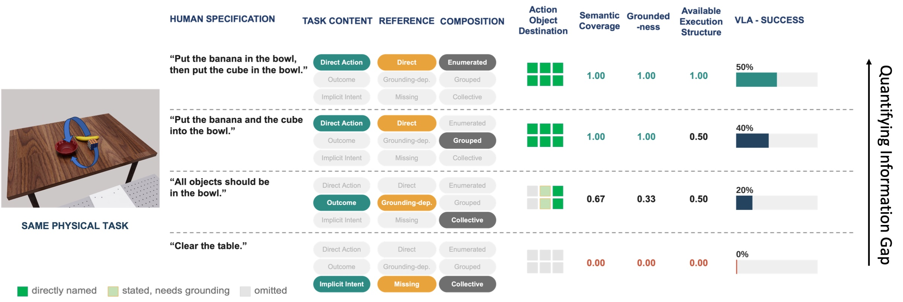
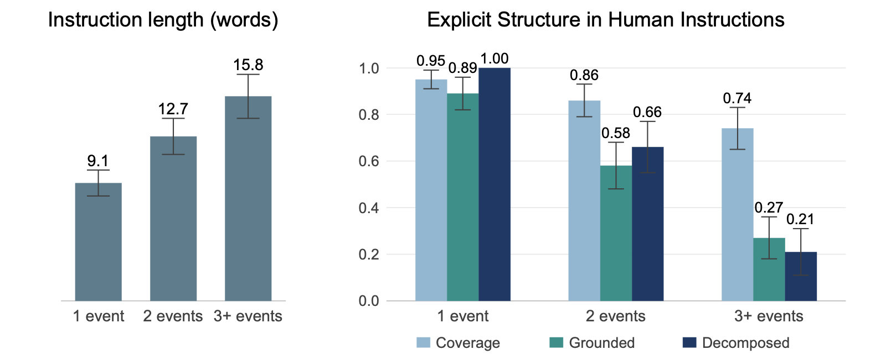
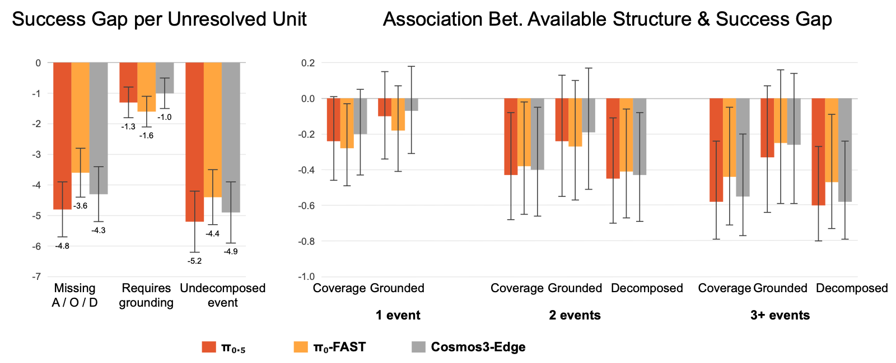
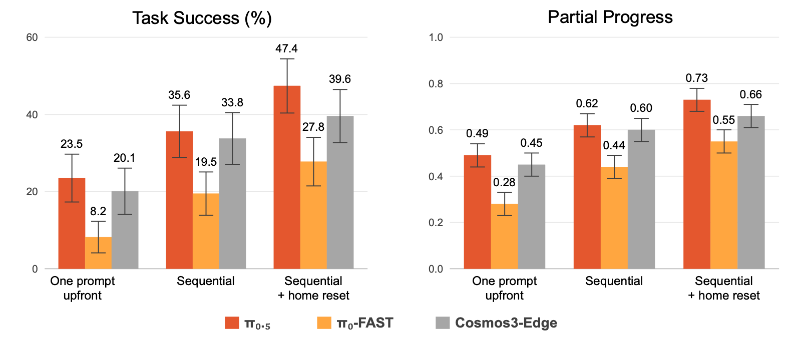
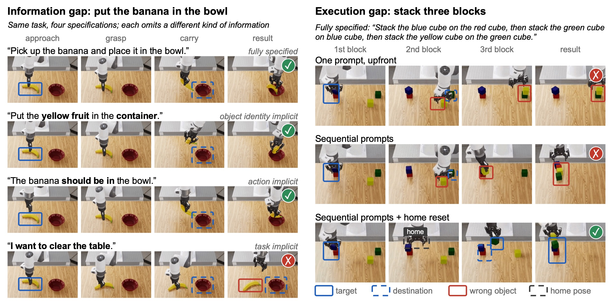

A robot may know how to perform a task yet fail when a human asks for it naturally. We study this human–VLA communication gap by separating an information gap, where task semantics, grounding, or event structure remain unresolved, from a residual execution gap, where even a fully specified task depends on how it is organized and invoked. To do this, we characterize how people naturally express demonstrated objectives and evaluate controlled variants of the same physical tasks, with detailed analysis on $\pi_{0.5}$ and consistent trends on $\pi_0$-FAST and Cosmos3-Edge. Our study reveals that humans increasingly compress instructions as tasks grow, relying more on contextual grounding and implicit execution structure. Current policies are misaligned with this behavior: they tolerate grounding dependence relatively well, but struggle when task semantics or event structure must be reconstructed. Even after the information gap is resolved, execution remains sensitive to command granularity and invocation state. These findings identify concrete targets for human-centered policy learning and interfaces that better bridge natural human objectives to robot behavior.
Ask a robot “Can you clear the table so I can work here?” and it may freeze, even though the same policy succeeds on “Pick up the white mug and place it in the bin.” What failed was not the physical skill but the interface to it. We study this communication gap through two mismatches:
Information gap
A natural specification leaves some of the executable task structure unstated (what to do, on which object, toward what target, as which sequence of events) and the policy must recover it.
Execution gap
Even a complete specification may fail if its resolved events are organized or invoked outside the policy's learned execution interface.
We asked 50 participants to watch task demonstrations and write the instruction they would give another human, yielding 750 specifications. Informed by these instructions and prior work on situated instruction, we derive a taxonomy that factors any specification by three axes. All examples below describe the same physical task; highlighted spans mark the varied element.
| Factor | Form | Example |
|---|---|---|
| Task content | Action | “Put all the yellow objects in the left bin and all the blue objects in the right bin.” |
| Outcome | “All yellow objects should be in the left bin, and all blue objects should be in the right bin.” | |
| Intent / preference | “I want the objects sorted by color.” | |
| Reference form | Direct | “Put the yellow mug in the left bin and the blue cup in the right bin.” |
| Grounding-dependent | “Put the yellow mug in the bin on the left and the blue cup in the bin on the right.” | |
| Missing | “Put the yellow mug and the blue cup away.” (destination omitted) | |
| Composition | Enumerated | “Put the yellow mug in the left bin, then put the yellow bowl in the left bin, then put the blue cup in the right bin.” |
| Grouped | “Put the yellow mug and bowl in the left bin, and the blue cup and plate in the right bin.” | |
| Collective | “Put all the yellow objects in the left bin and all the blue objects in the right bin.” |
From each demonstration we recover an ordered sequence of grounded manipulation events $E_\tau=(e_1,\ldots,e_{K_\tau})$, with $e_k=(A_k,O_k,D_k)$ an action, object, and destination. This shared representation lets us compare any human specification $u$ against a fully resolved, policy-facing command built from templates mined from the policy's robot-training language. For each specification we measure:

Finding 1

People do not communicate more complex objectives by proportionally lengthening their instructions. Instruction length grows sublinearly with the number of required events, while the executable structure made explicit declines sharply. People preserve much of the task content but increasingly rely on the listener to resolve referents and, especially, to expand a compact expression into atomic manipulations. This compression is structure-dependent: weakly structured tasks stay enumerative, while rule-compressible tasks shift toward outcome-level and collective descriptions.
Finding 2
What matters is not simply how much information is unresolved, but what must be recovered. Policies tolerate grounding-dependent references well, but pay much more when task semantics or event structure must be reconstructed. Each undecomposed event costs about as much as a missing action, object, or destination.

| Content | Reference | $\eta_\tau$ | $\gamma_\tau$ | Enumerated $\bar\delta=1.00$, $N=120$ |
Grouped $\bar\delta=0.47$, $N=54$ |
Collective $\bar\delta=0.41$, $N=50$ |
|||
|---|---|---|---|---|---|---|---|---|---|
| Succ. | $\Delta^{\text{info}}$ | Succ. | $\Delta^{\text{info}}$ | Succ. | $\Delta^{\text{info}}$ | ||||
Success (%) and information-gap penalty $\Delta^{\text{info}}_{\text{Success}}$ (points below the fully specified Action–Direct–Enumerated reference). Darker red marks a larger gap; bold marks one-factor ablations from the reference. Means over task-level averages; see the paper for 95% CIs.
Finding 3
Is complete executable information sufficient? We fix every compound task to the same fully resolved Action–Direct–Enumerated event sequence and vary only how its events are presented and invoked. No task information is added, yet issuing events one at a time, and resetting the arm to a familiar home pose between them, substantially improves execution for all three policies.


Across $\pi_{0.5}$, $\pi_0$-FAST, and the world-action model Cosmos3-Edge, the same pattern holds, but each component of the gap traces back to a different part of the model:
Generalist robots should adapt to how people communicate, rather than requiring people to adapt to the robot's learned interface.